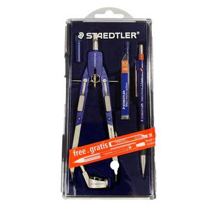
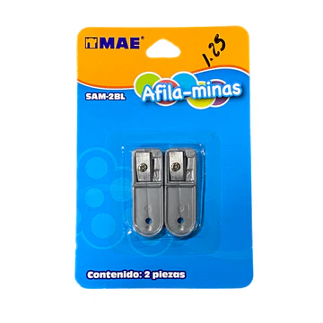

Bazar Juanita García
Hazlo a tu medida
Sobre Nosotros
Catálogo
Contacto
Servicio a domicilio a todo El Salvador. Haga ya sus pedidos
Productos más vendidos en los últimos 30 días

Compás de precisión Steadler $21.00

Par de afilaminas MAE $1.25